1.1Introduction
The mining industry has for the longest time been determining comminution parameters via expensive and time-consuming laboratory tests, typically Bond Ball Mill Work Index and SMC™/DWT Axb (Bond, 1961; Morrell, 2004; Napier-Munn et al, 1996). Due to budgetary constraints, this has curtailed the collection of sufficient numbers of BMWi or Axb measurements to allow the inherent variability to be adequately quantified, for direct estimation into a block model for mine planning. Ultimately operations have and continue to experience difficulties in reaching or sustaining target production rates because the mill circuit design is derived from averaged core data, determined at the exploration/study phase for the project. Too often this data proves inadequate in response to the ore variability encountered as the resource is mined, making successful management of the process a challenge.
SimSAGe believes the historical precedence of inappropriate mill design and sub-optimal performance could have been mitigated if the industry had access to a simple, rapid, and less expensive test, which could provide sufficiently reliable comminution parameters like Axb and BMWi. To address this critical void, a new device has been developed, referred to as the Hardness Index Tester or HIT, exploiting a central feature of single particle impact testing — 1) that the Axb can be reliably estimated using one precise low energy test, and 2) that the Bond grindability can be linked to the breakage response at one precise high energy test. The HIT has undergone two industrial trials in the US and Canada, and the results to date have proved it can deliver on all fronts. The HIT was launched in October 2016 at the AusIMM MillOps16 conference in Perth (Kojovic, 2016). Examples of successful applications can be found in technical papers by Bergeron et al (2017) and Leetmaa et al (2019).
1.2Development of HIT
SimSAGe believed it was possible to design and build a fit-for-purpose small device to measure Axb using a single low energy test. The device was called the Hardness Index Tester or HIT. The HIT design criteria included the following features:
- Safe to use
- Portable and easy to use with minimal training
- Rapid turn-around time (<5 mins per test)
- Requires no power, air or hydraulics
- Low noise and dust generation
- Axb index can be calculated at site — eliminating the need to send either the ore samples or the raw data offsite for analysis
- Generates on the spot results allowing for real time decision making
The first prototype was built in Oct 2013 in Brisbane, and sent to Teck ART Laboratory in Trail, BC Canada for trials. The results were promising, but the machine design did not adequately meet the above criteria, requiring further development to improve its consistency. The second-generation prototype was precision engineered, generating accurate and repeatable results, and is safe and easy to use. The fabrication was completed in California, USA. The materials were selected to suit the intended use and portability (15kg), whilst minimizing cost when compared to other methods/equipment required for achieving similar results/data. The device is supplied with a consistency measurement feature, to ensure that the available input energy is consistently delivered, over the life of the machine. The rock top size chosen for hardness testing was 25mm. The HIT device was granted US patent No. 10,739,238 on August 11, 2020.
Figure 1 shows the second generation HIT prototype, which comprises a frame, a sample cup to hold the fragment to be crushed, the crusher hammer assembly, and dual lever mechanism to trigger the release of the hammer onto the fragment in the cup. The sample cup sits in a dedicated grooved inset on the top surface of the frame base plate, and comprises a handle allowing a user to easily remove the sample cup from the frame during testing (see Figure 2). The apparatus includes a non-rock means of monitoring the consistency of the input energy delivered to a specimen over time (via lead shot supplied with a very low diameter tolerance, 0.44 ± 0.007 inches). Similarly, the lead shot is used to check the suitability of the working surface on which the HIT will be positioned for testing.
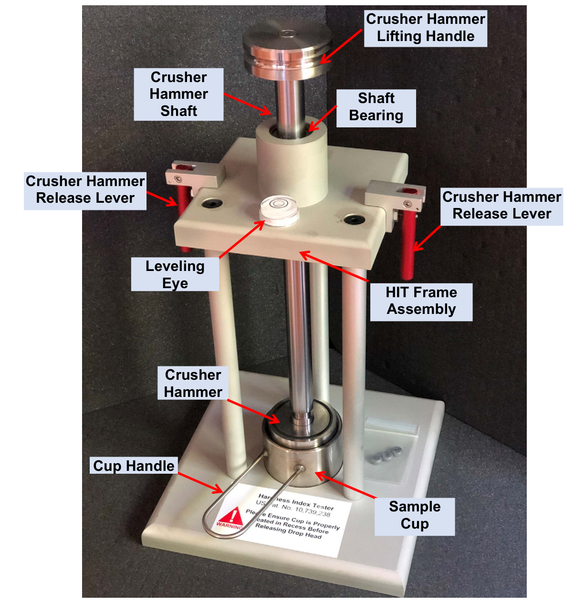
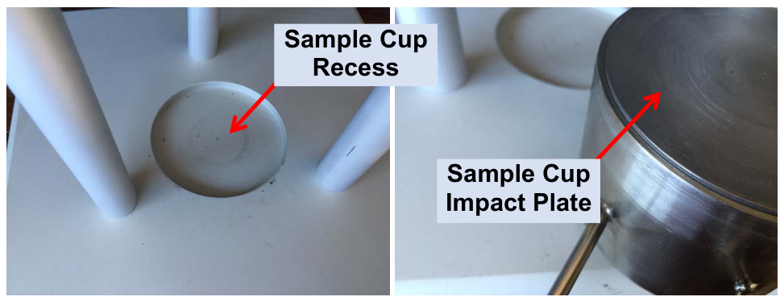
1.3Sample Preparation
The sample preparation for the Axb and BondWi Proxy tests will usually require sized fragments, but quarter core pieces can also be used following a special protocol. Hence the two main steps in the sample preparation include staged crushing of the source material (drill core or coarse lump) followed by sizing using standard screens (manually or using shaker) into various root 2 sieve size fractions depending on target size and sample availability. Alternatively, one can skip stage crushing and move to screening if the source material has sufficient fragments for testing, for example, SAG feed or blast hole reject samples. The typical size fractions that are suitable for HIT testing are:
- 22.4×19.0mm (Axb proxy)
- 19.0×16.0mm (Axb proxy)
- 16.0×13.2mm (Axb proxy)
- 11.2×9.5mm (BondWi proxy)
- 9.5×8.0mm (BondWi proxy)
Please note that a single test consists of selection of at least 10 rocks to be broken in the HIT device. It is recommended that every rock sample chosen for testing be done in triplicate (ie. 3 splits of 10 rocks from the same size fraction) providing three separate hardness measurements from which the average hardness and variability can be quantified for each sample. Figure 3 summarizes the steps in the sample preparation and testing protocol for the HIT Axb (22.4×19mm) and BondWi (11.2×9.5mm) Proxy tests. Table 1 shows the proposed test conditions. As the input energy in the HIT device is fixed (nominally 4.5kg and 25cm or 11 Joules), the specific energy applied will vary with the mass of fragment used in the tests.
Table 1: HIT Test Conditions
| Size Range (mm) | Test Type | No. of Tests/Sample | Number of Particles/Test | Estimated Total Mass (kg) | Expected Ecs (kWh/t) |
|---|---|---|---|---|---|
| −22.4 +19 | Axb | 3 | 10 | 0.450 | 0.20 |
| −19 +16.0 | Axb | 3 | 10 | 0.267 | 0.35 |
| −16 +13.2 | Axb | 3 | 10 | 0.155 | 0.60 |
| −11.2 +9.5 | BondWi | 3 | 20 | 0.110 | 1.60 |
| −9.5 +8.0 | BondWi | 3 | 20 | 0.067 | 2.83 |
Note: sample mass estimates are based on ore SG of 2.8 g/cm³.
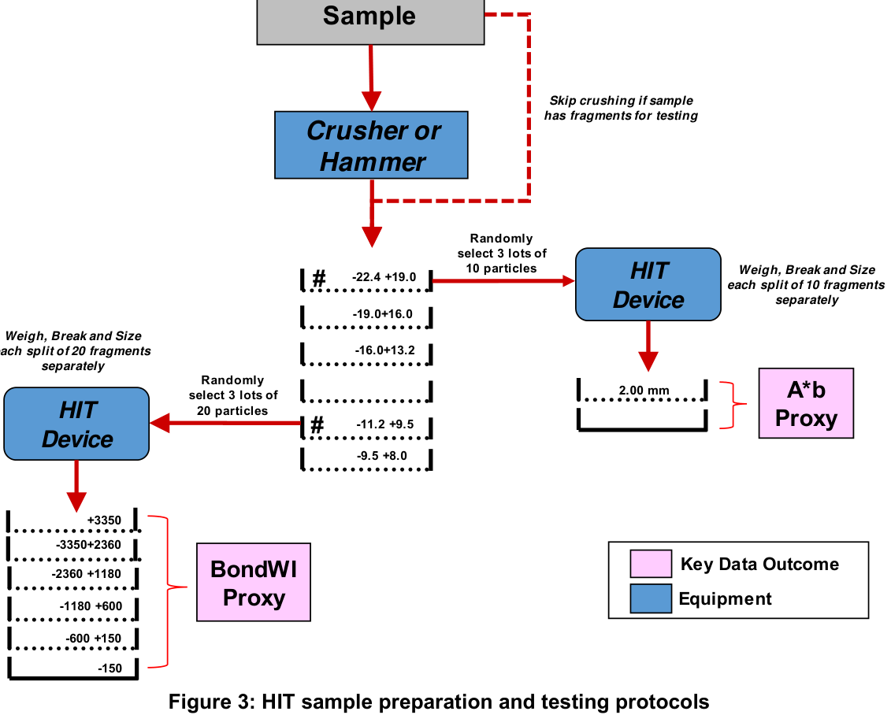
1.4HIT Testing Procedure
1.4.1Initial Set-up and QA/QC Tests
The HIT device should be used on a SOLID, LEVEL bench. An unstable or flimsy bench could dissipate the energy released by the HIT and skew the results. The bullseye circular level is provided to check the machine is level in two dimensions, making sure the circular bubble is ideally within the inner black circle, as shown in Figure 4. In operation, the HIT can make a small movement with each impact, especially if the work bench is not solid. Hence the user may benefit from providing a simple docking mechanism to lock the base plate to the work bench, thereby avoiding any HIT displacement during use.
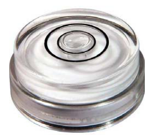
Before commencing any testing using rock samples, at least five lead shot balls should be used to check the consistency of the machine and the firmness/support of the proposed work bench, in terms of the final thickness of each lead shot ball. This procedure requires each ball to be placed in the sample cup, one at a time, and then compressed by pulling on the two levers simultaneously to release the crusher hammer onto the lead shot. The thickness of each ball should then be measured using digital Vernier callipers, as shown in Figure 5. Temperature of the lead shot at the time of the testing should be recorded; a non-contact infrared thermometer is ideal for this application.
The lead shot is supplied by McMaster-Carr, product code 9030K29, in boxes of 250 pieces.
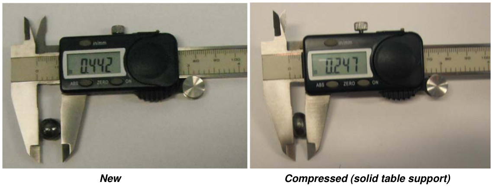
The QA/QC checks should be repeated approximately every 500 drops to ensure the device is delivering the same energy. The temperature of the lead shot needs to be measured each time.
NoteIf the HIT device is relocated, ensure the work bench provides similar support to the original location, by checking the average thickness of the lead shot (in triplicate) before starting any rock sample testing.
The best support is provided by a concrete floor or base, which should result in thicknesses averaging 0.233 inches for the second generation HIT device. Normal work benches will offer less rigid support, resulting in somewhat increased thicknesses, typically around 0.250 inches. The average lead shot thickness for the selected support work bench will be used in the final calculation of the applied energy in the HIT breakage tests, based on available data from DWT calibration using lead shot.
An Excel data entry s/sheet is provided by SimSAGe for tracking the lead shot measurements (see Table 2). Note that the blue shaded cells represent user inputs. This spreadsheet should be used to keep track of the lead shot measurements from the start, during testing (every ~500 drops) and anytime the HIT is relocated to a new support bench. The data are used to monitor the consistency of the HIT device over time, and the energy utilization percentage for each support location. The energy utilisation percentage is an input to the online software for checking, processing, and downloading of the estimated ore hardness results (Axb or BondWi proxies) back to the site. The expected variation in the lead shot compression strength is equivalent to ±0.003 inches. Hence no adjustment to the energy utilization percentage is necessary if the lead shot average thickness is within this tolerance.
Table 2: Example Data Entry for HIT Lead Shot Monitoring and Temperature Measurement
| HIT Lead Shot Data Entry Steel Bench | |
|---|---|
| Machine Serial No. | PHAJB |
| Client | ABC |
| Date | 1-Jan-19 |
| Temperature (°C, Lead Shot) | 21.0 |
| Lead Shot Results | Value |
| Shot #1 Thickness (inches) | 0.2460 |
| Shot #2 Thickness (inches) | 0.2455 |
| Shot #3 Thickness (inches) | 0.2450 |
| Shot #4 Thickness (inches) | 0.2455 |
| Shot #5 Thickness (inches) | 0.2445 |
| Average Lead Shot Thickness | 0.2453 |
| QC Outcome? | OK |
| Machine Energy Parameters | Value |
| Mass of Weight (kg) | 4.51 |
| Total Height (cm) | 25.40 |
| Temperature Corrected Thickness (inches) | 0.2453 |
| Nominal Input Energy Applied (J) | 10.573 |
| Nominal Available Energy (J) | 11.238 |
| Energy Utilization (%) | 94.084 |
1.4.2Monitoring of Impact and Sample Cup Wear Plates
The wear on the crusher hammer and sample cup impact surfaces should be monitored weekly to ensure the plates are not pitted or cracked, which could affect the integrity of the HIT breakage tests. The beta trials suggest the plates should last at least 18,000 drops. A spare head impact plate and sample cup is supplied with the device for change-out when deemed necessary. Figure 6 shows an example of some pitting observed in the first industrial trial after 20,000 drops. When not in use, the HIT device should be stored in a dry and dust free area, with the crusher hammer released, sitting in the sample cup.
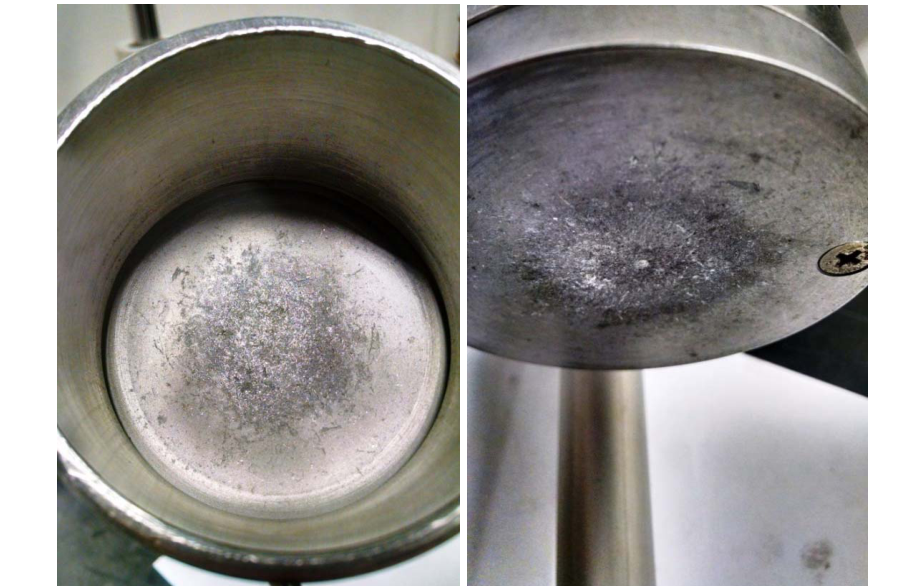
1.4.3Breakage Tests
As noted above, triplicate testing allows for greater reliability in determining the rock hardness proxy and will require 30 drops of the head. The HIT beta testing has proven this triplicate testing to be the most reliable and recommended approach to use with the minimum of 10 rocks per test.
Though sorting or filtering of rocks based on mass/shape is not critical if the sizing and preparation is completed minus too much manual intervention, the user should avoid selecting unusually large or misshapen fragments, or very small light fragments. This sorting approach follows the SMC™ test protocol, which prescribes the rejection of any fragment whose mass is not within 30% of the expected mass for the size fraction (based on expected volume and measured SG).
Figure 7 shows an example of 10 randomly selected fragments from the 22.4×19mm size fraction, which was part of a round-robin SMC™ testing program. The images show the variation in fragment mass and shape; the expected mass for this sample was 15.6g, with the 30% tolerance representing 10.9 to 20.3g. In this set of 10 fragments, four fragments would have been rejected if subjected to the SMC™ protocol.
The sorting is likely to be necessary in selecting rocks from crushed drill core samples, which have a greater tendency of generating unusually shaped fragments, as per the example shown in Figure 8.
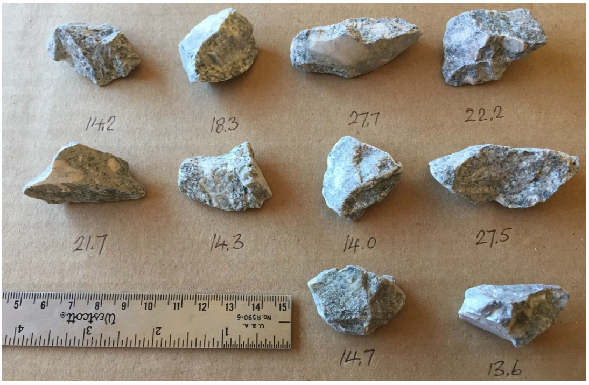
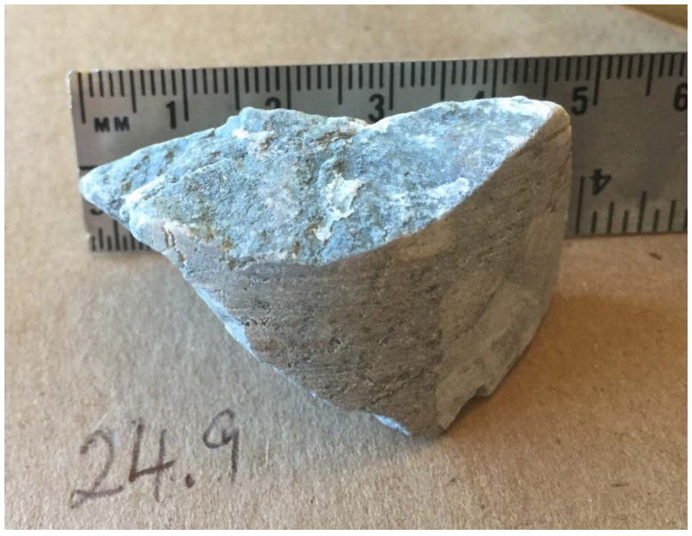
Following the preparation and selection of the fragments, the main steps in the HIT testing procedure are as follows:
- Place each rock in the sample cup, approximately in the centre of the cup, then place the sample cup in position, ensuring the cup is always properly seated in recess before releasing crusher hammer (see warning sign on base plate, see Figure 9).
- Release crusher hammer by pulling on the two levers simultaneously. Figure 10 shows an example of a 22.4×19mm fragment, pre- and post-breakage in the cup. Figure 11 shows an example of a 11.2×9.5mm fragment used in BondWi proxy testing, pre- and post-breakage in the cup.
- The broken fragments are removed from the cup and the process repeated until all 10 rocks are broken. To minimize housekeeping losses, the cup should be brushed out if there is any residual fine material in the cup. Similarly, material may adhere to the head impact plate, especially with soft samples and/or BondWi proxy testing. This material should be brushed off during testing and collected with the broken fragments from the cup.
- The combined product is screened on one sieve to derive the mass of oversize and undersize in the case of Axb proxy testing, or five sieves to derive the mass distribution in the case of BondWi proxy testing.
- The raw data collected post sizing of the combined product generated from the 10 or 20 drops are captured in an Excel data entry spreadsheet and later can be uploaded at the tester's convenience to an online calculator which converts them to a hardness index proxy (either Axb or BondWi).
The above steps form part of the SOPs supplied for HIT Axb and BondWi proxy testing as described in Section 1.6.
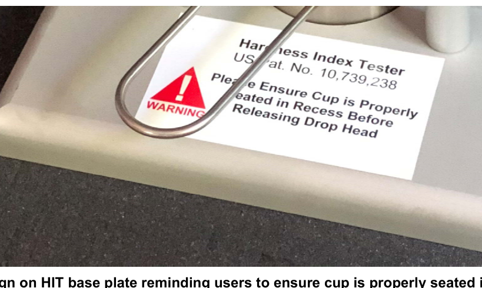
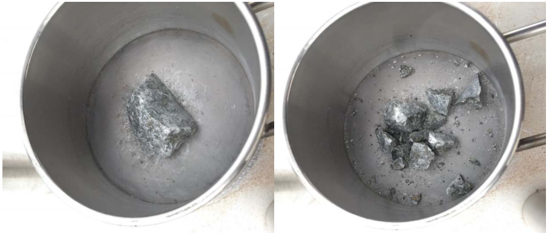
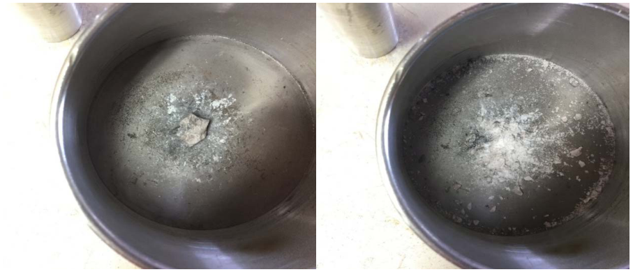
1.5HIT Product Analysis
The products from each HIT test will need to be dry sized using a single or multiple sieves, depending on the fragment size and/or test type (see Figure 12).
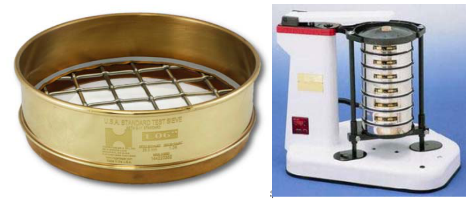
For the Axb proxy testing the target product sizing sieves are as follows:
- 22.4×19.0 mm — 2.0mm
- 19.0×16.0 mm — 1.7mm
- 16.0×13.2 mm — 1.4mm
The basic dry sizing procedure is as follows:
- Record starting weight of each sample.
- Dry sieve the HIT products over the target screen and pan using a sieve shaker/vibrator for 3 minutes. If the sample is very friable (eg. bright coal), a shorter time or hand sizing of the coarse fractions might be warranted to minimize the degradation.
The sieving for the BondWi proxy test products needs 5 sieves plus pan (see Figure 13), as follows: 3.35, 2.36, 1.18, 0.60 and 0.15 mm.
- Record weight retained on each sieve and pan in grams (see Figure 14).
- Combine fractions from each sieve and store in clearly labelled sample bag.
NoteEnsure the sieves are cleaned after each use, to minimize contamination and blinding.
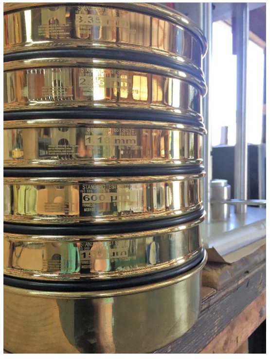
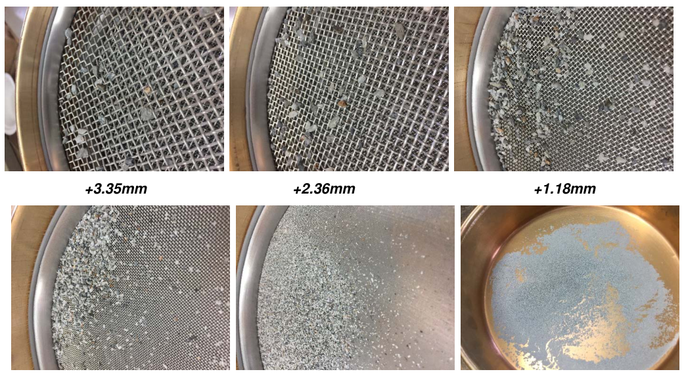
1.6HIT Data Entry / Analysis
The results from the sizing analysis, recorded as per section 1.5, need to be transferred to an Excel datasheet template supplied by SimSAGe (see Table 3). Note that the blue shaded cells represent user inputs. The datasheet template will automatically highlight any unusually high losses incurred in the testing or subsequent sieving. The t10 percentage is calculated for each test.
Note that the Axb proxy test can be completed on either sorted or unsorted rocks, depending on user preference. The BondWi proxy test is completed on unsorted fragments. SOPs for the three HIT test options are included at the end of this document (see Tables 4 to 6).
Once the Excel data entry is complete, the user can upload the raw data to the HIT Online Calculator via a 'csv' file upload, for checking, processing and downloading of the estimated ore hardness results (Axb or BondWi proxies) back to the site.
Table 3: Example Data Entry and Results from HIT Axb and BondWi Proxy Tests
| HIT A*b Test Data Entry for Broken Rocks | |
|---|---|
| Job # | ABC160515 |
| Client sample ID | XYZ-1 |
| Date | 15-May-16 |
| Rock Upper Size (mm): | 22.40 |
| Rock Lower Size (mm): | 19.00 |
| Rock Size Fraction (mm): | 22.4 × 19 mm |
| Target Ave Rock Size (mm): | 20.63 |
| A*b q factor (size effect): | 0.58 |
| Test Parameter | Value |
| Mass of Weight (kg) | 4.51 |
| Total Height (cm) | 25.40 |
| Ave Size of Rock (cm) | 2.06 |
| Ecs (kWh/t) – nominal | 0.19 |
| No. Particles | 10 |
| Initial mass (g) | 160.25 |
| After breakage (g) | 160.21 |
| Raw Sizing Data | |
| OVERSIZE : +2.06mm (g) | 148.57 |
| UNDERSIZE : −2.06mm (g) | 11.60 |
| Sum (g) | 160.2 |
| Breakage loss (g) | 0.0 |
| Loss Breakage (%) | 0.02 |
| Sieving loss (g) | 0.04 |
| Loss Sieving (%) | 0.02 |
| Break Status | OK |
| Sieve Status | OK |
| t10 (%) | 7.24 |
| Export Raw Data to HITexportAB.CSV | |
| HIT Bond Proxy Test Data Entry for Broken Rocks | |
|---|---|
| Job # | ABC160515 |
| Client sample ID | XYZ-1 |
| Date | 15-May-16 |
| Rock Upper Size (mm): | 11.20 |
| Rock Lower Size (mm): | 9.50 |
| Rock Size Fraction (mm): | 11.2 × 9.5 mm |
| Target Ave Rock Size (mm): | 10.32 |
| Test Parameter | Value |
| Mass of Weight (kg) | 4.51 |
| Total Height (cm) | 25.40 |
| Ave Size of Rock (cm) | 1.03 |
| Ecs (kWh/t) – nominal | 1.53 |
| No. Particles | 20 |
| Initial mass (g) | 40.90 |
| After breakage (g) | 40.90 |
| Raw Sizing Data | |
| +3.35mm | 13.84 |
| +2.36−3.35mm | 6.32 |
| +1.18−2.36mm | 8.94 |
| +0.600−1.18mm | 4.70 |
| +0.150−0.600mm | 4.14 |
| −0.150mm | 2.74 |
| Sum (g) | 40.68 |
| Breakage loss (g) | 0.00 |
| Loss Breakage (%) | 0.00 |
| Sieving loss (g) | 0.22 |
| Loss Sieving (%) | 0.54 |
| Break Status | OK |
| Sieve Status | OK |
| t10 (%) | 25.799 |
| Export Raw Data to HITexportBOND.CSV | |
Table 4: SOP for Axb Proxy Test (Sorted Rocks)
| Task Background: | Single particles are placed in a cup, and broken by dropping the crusher hammer from a fixed height; broken particles are collected, sized on one sieve, and the mass split across the sieve recorded. |
|---|---|
| Scope & Application: | This SOP details the safe method of using the HIT device. |
| Hazards: | Noise, dust, physical strain, physical injury. |
| PPE: | Standard site requirements, Hearing Protection, Eye Protection, Dust Mask. |
| Tools/Equipment: | Brush, Tray, Tongs, Scale, Sieves. |
| Related documents: | HIT Data Entry (Axb SORTED).XLS |
| Step | Explanation | Critical Comments |
|---|---|---|
| 1. Sample prep | Obtain approximately 500g of sample. Screen out the particles in the 22.4×19.0mm size range using a 200mm diameter screen. Count and weigh all the particles. Select a minimum of 10 to maximum of 20 particles using a random selection method (ensuring that each particle conforms to ±20% mass tolerance from the mean mass, and the average mass of the 10 particles conforms to the ±5% mass tolerance from the mean mass, as per the Excel data entry template). | The sorting by mass eliminates outliers and improves the consistency of the applied specific energy Ecs. Excel template is set-up for up to 20 particles. |
| 2. Test | Record the mass of the combined 10 particles. Place first particle into cup, approximately in the centre of the cup. Place the sample cup in position, and release crusher hammer mass by pulling on the pair of red levers simultaneously. Lift up the crusher hammer until it automatically locks into an engaged position using the latch pins. Using the handle on the sample cup, remove the cup and transfer the crushed fine particles to a tray, including any dust which may have adhered to the crusher hammer impact plate. Repeat the procedure for the remaining 9 particles. | Ensure sample cup is always properly seated in recess. Brush out cup (and impact plate if required). |
| 3. Sizing | Record the mass of the combined total of 10 broken particles. Place the broken material onto 2.00mm sieve, with a pan and lid. Shake or sift for 5 minutes. Record the mass of the screen oversize. The u/size (pan) mass is calculated from the initial mass of broken particles less the mass of the oversize. Store oversize and undersize material into pre-labelled sample bag(s). | Time required for screening will depend on mass of particles, their friability, and method (RoTap or manual). The sieve is selected to determine the t10 percentage. |
| 4. Report | Raw results are saved in Excel data entry template and uploaded to the online calculator for processing. | HIT users are provided username and password to access calculator. |
| 5. Calculation of Axb | The slope (t10/Ecs) is determined from the raw data for each sample. Conversion of slope to an equivalent DWT basis Axb is provided by SimSAGe via the Online HIT Calculator. |
Table 5: SOP for Axb Proxy Test (Un-Sorted Rocks)
| Task Background: | Single particles are placed in a cup, and broken by dropping the crusher hammer from a fixed height; broken particles are collected, sized on one sieve, and the mass split recorded. |
|---|---|
| Scope & Application: | This SOP details the safe method of using the HIT device. |
| Hazards: | Noise, dust, physical strain, physical injury. |
| PPE: | Standard site requirements, Hearing Protection, Eye Protection, Dust Mask. |
| Tools/Equipment: | Brush, Tray, Tongs, Scale, Sieves. |
| Related documents: | HIT Data Entry (Axb UNSORTED).XLS |
| Step | Explanation | Critical Comments |
|---|---|---|
| 1. Sample prep | Obtain approximately 500g of sample. Screen out the particles in the 22.4×19.0mm size range using 200mm diameter screen. Count and weigh all the particles. Select a minimum of 10, maximum of 20, particles using a random selection method. | Excel template is set-up for up to 20 particles. |
| 2. Test | Record the mass of the combined 10 particles. Place first particle into cup, approximately in the centre of the cup. Place the sample cup in position, and release crusher hammer mass by pulling on the pair of red levers simultaneously. Lift up the crusher hammer until it automatically locks into an engaged position using the latch pins. Using the handle on the sample cup, remove the cup and transfer the crushed fine particles to a tray, including any dust which may have adhered to the crusher hammer impact plate. Repeat the procedure for the remaining 9 particles. | Ensure sample cup is always properly seated in recess. Brush out cup (and impact plate if required). |
| 3. Sizing | Record the mass of the combined total of 10 broken particles. Place the broken material onto 2.00mm sieve, with a pan and lid. Shake or sift for 5 minutes. Record the mass of the screen oversize. The u/size (pan) mass is calculated from the initial mass of broken particles less the mass of the oversize. Store oversize and undersize material into pre-labelled sample bag(s). | Time required for screening will depend on mass of particles, their friability, and method (RoTap or manual). The sieve is selected to determine the t10 percentage. |
| 4. Report | Raw results are saved in Excel data entry template and uploaded to online calculator for processing. | HIT users are provided username and password to access calculator. |
| 5. Calculation of Axb | The slope (t10/Ecs) is determined from the raw data for each sample. Conversion of slope to an equivalent DWT basis Axb is provided by SimSAGe via the Online HIT Calculator. |
Table 6: SOP for BondWi Proxy Test (Un-Sorted Rocks)
| Task Background: | Single particles are placed in a cup, and broken by dropping the crusher hammer from a fixed height; broken particles are collected, sized using 5 sieves, and the mass retained on each sieve and pan recorded. |
|---|---|
| Scope & Application: | This SOP details the safe method of using the HIT device. |
| Hazards: | Noise, dust, physical strain, physical injury. |
| PPE: | Standard site requirements, Hearing Protection, Eye Protection, Dust Mask. |
| Tools/Equipment: | Brush, Tray, Tongs, Scale, Sieves. |
| Related documents: | HIT Data Entry (Bond Proxy UNSORTED).XLS |
| Step | Explanation | Critical Comments |
|---|---|---|
| 1. Sample prep | Obtain approximately 100g of sample. Screen out the particles in the 11.2×9.5mm size range using 200mm diameter screen. Select a minimum of 20 particles using a random selection method. | |
| 2. Test | Record the mass of the combined 20 particles. Place first particle into cup, approximately in the centre of the cup. Place the sample cup in position, and release crusher hammer mass by pulling on the pair of red levers simultaneously. Lift up the crusher hammer until it automatically locks into an engaged position using the latch pins. Using the handle on the sample cup, remove the cup and transfer the crushed fine particles to a tray, including any dust which may have adhered to the crusher hammer impact plate. Repeat the procedure for the remaining 19 particles. | Ensure sample cup is always properly seated in recess. Brush out cup (and impact plate if required). |
| 3. Sizing | Record the mass of the combined total of 20 broken particles. Place the broken material onto sieve stack, with a pan and lid, and following screens: 3.35mm, 2.36mm, 1.18mm, 0.600mm and 0.150mm. Shake or sift stack for 5 minutes. Record the mass retained on each screen. The u/size (pan) mass is calculated from the initial mass of broken particles by difference. Store broken sized material into pre-labelled sample bag(s). | The 5 screens are required to reliably determine slope of broken size distribution. Other combinations of screens could be used, but SimSAGe should be consulted before changing the procedure. |
| 4. Report | Raw results are saved in Excel data entry template and uploaded to online calculator for processing. | HIT users are provided username and password to access calculator. |
| 5. Calculation of BMWi | Several parameters are determined from the raw data for each sample. These parameters are used to estimate the Bond BMWi using a universal calibration model, provided by SimSAGe via the Online HIT Calculator. | The calibration can be updated for each ore deposit. |
1.7References
- Bergeron, Y., Kojovic, T., Gagnon, M-d-N. and Okono, P., 2017. Applicability of the HIT for Evaluating Comminution and Geomechanical Parameters from Drill Core Samples — The Odyssey Project Case Study. Proceedings COM 2017 World Gold Conference, August, Vancouver BC, Canada.
- Bond, F.C., Crushing and grinding calculations. Brit. Chem. Eng., 1961, Part I 6 (6), 378–385, Part II 6 (8) 543–548.
- Kojovic, T., 2016. HIT — A Portable Field Device for Rapid Hardness Index Testing at Site. Proceedings AusIMM Mill Operators' Conference 2016, October, Perth WA, pp9-16.
- Leetmaa, K., Bergeron, Y. and Kojovic, T., (2019). The value of Daily HIT Ore Hardness Testing of SAG Feed at the Meadowbank Gold Mine, Proceedings from SAG2019, Vancouver, September.
- Morrell, S., 2004. Predicting the Specific Energy of Autogenous and Semi-Autogenous Mills from Small Diameter Drill Core Samples, Minerals Engineering, Vol 17/3 pp 447-451.
- Napier-Munn, T.J., Morrell, S., Morrison, R.D., and Kojovic, T., Mineral comminution circuits: their operation and optimisation. ISBN 0 646 28861 x, 1996, Julius Kruttschnitt Mineral Research Centre, Australia.
1.8Disclaimer
- SimSAGe Pty Ltd and its employees make reasonable efforts to ensure an accurate understanding of client requirements. The information in this document is based on that understanding and SimSAGe Pty Ltd strives to be accurate in its advice.
- While reasonable care has been taken in the preparation of this document, this document and all information, assumptions, and recommendations herein are published, given, made or expressed without any responsibility whatsoever on the part of SimSAGe Pty Ltd, whether arising by way of negligence, breach of contract, breach of statutory duty or otherwise.
- No warranty or representation of accuracy or reliability in respect of the document is given by SimSAGe Pty Ltd or its directors, employees, servants, agents, consultants, successors in title or assigns.
- This disclaimer shall apply to liability to any person whatsoever, irrespective of how such liability arises, whether by use of this document by that person or you or any other person or otherwise.
- You shall indemnify SimSAGe Pty Ltd and its directors, employees, servants, agents, consultants, successors in title or assigns against any claim made against any or all of them by third parties arising out of the disclosure of this document, whether directly or indirectly, to a third party.